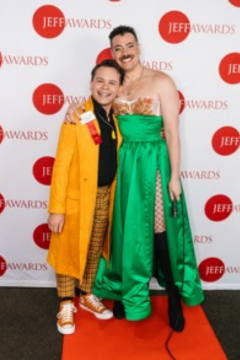
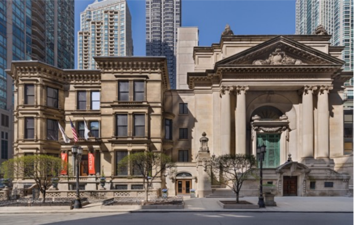
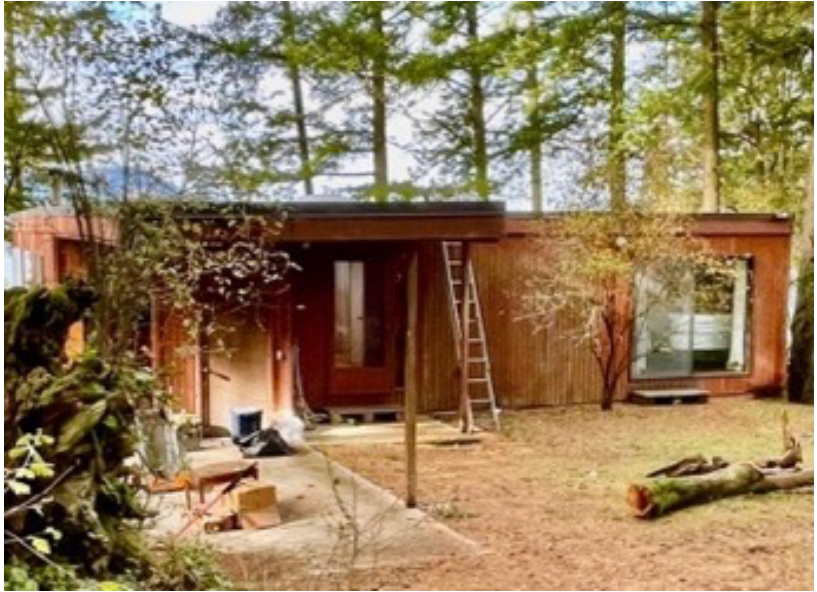

Elizabeth Dunlop Richter
Travel & Culture Writer
With a background in television, radio, and theater, Elizabeth Dunlop Richter has been a writer for Classic Chicago Magazine since its founding. Her work ranges across the globe — from island dispatches in the Pacific Northwest to Alsatian chefs, Detroit's culinary revival, and Chicago's vibrant theater scene. She is perhaps best known for her long-running Stage Write column, which covers the city's non-equity and equity stages, and for her personal essays on travel, food, and the texture of a life well examined. This archive collects all 103 of her articles.
This is an archive restored from Classic Chicago Magazine's original website. Some older articles may be missing photographs due to image loss during a complete site loss by the original services provider; those articles are displayed with a placeholder. A small number of articles from the earliest years of publication may not be represented.
2026


2025

2024





2023





2022





2021


2020

2019
2018


2017